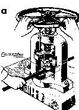

ПРАВКА И РИХТОВКА МЕТАЛЛА. ОСНОВНЫЕ СВЕДЕНИЯ
ПРАВКА И РИХТОВКА МЕТАЛЛА
Представляют собой операции по выправке металла, заготовок и деталей, имеющих вмятины, выпучины, волнистость, коробление, искривление и др.
Правка – слесарная операция при помощи которой устраняются неровности и другие недостатки формы заготовки
СПОСОБЫ ПРАВКИ:
В холодном состоянии
В горячем состоянии
Выбор способа зависит от прогиба, размеров и материала изделия.
ПРАВКА МОЖЕТ ВЫПОЛНЯТЬСЯ:
Ручным способом
НА СТАЛЬНОЙ ИЛИ ЧУГУННОЙ ПЛИТЕ.
Машинным способом
НА ПРАВИЛЬНЫХ ПАЛЬЦАХ ИЛИ ПРЕССАХ.

Рихтовка – это правка закалённого металла